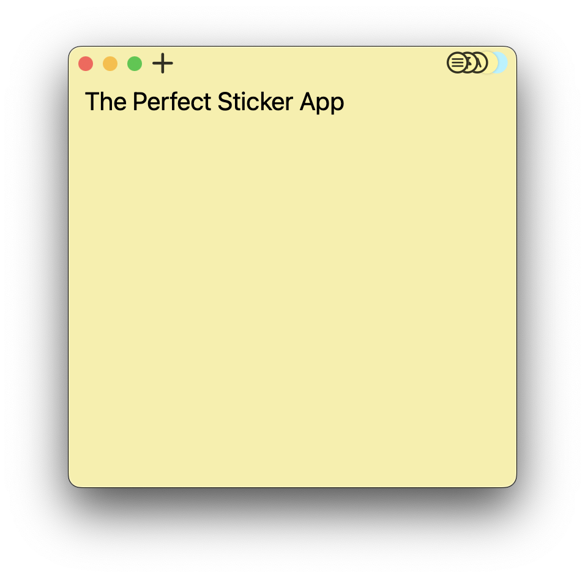

CloudSticker
你的思维速记本

云便签是Mac用户寻找整理贴纸并方便访问的完美解决方案。该应用与Mac无缝集成，提供简单、整洁和有效的贴纸管理解决方案。使用CloudSticker for Mac，您可以在云端存储无限数量的贴纸，快速搜索特定贴纸，并将它们组织到自定义集合中，全部在您的Mac计算机上完成。使用CloudSticker for Mac升级您的贴纸体验，这是Mac用户的终极贴纸管理解决方案。
云便签 用简单有效的解决方案帮助你整理思维，方便组织和访问你的想法。将笔记存储和分类在云端，便于搜索、编辑和共享。立即整理您的思维！
云便签是希望简化工作流程并保持组织的专业人士的理想解决方案。无论您是需要跟踪截止日期、安排预约，还是只是随手记下想法，CloudSticker for Office Work都提供了简单有效的方法来管理所有与办公室相关的便笺。
云便签是一个激发想象力、帮助实现创意想法的工具。无论您是艺术家、作家，还是只是对创意充满热情的人，CloudSticker for Creativity都提供了一个简单易用的平台，用于存储和管理所有的创意贴纸。

HOLDEN CAULFIELD
Senior Product Designer
ALPER KAMU
UI Develeoper
HENRY LETHAM
CTO